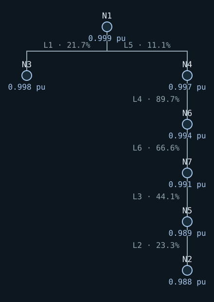
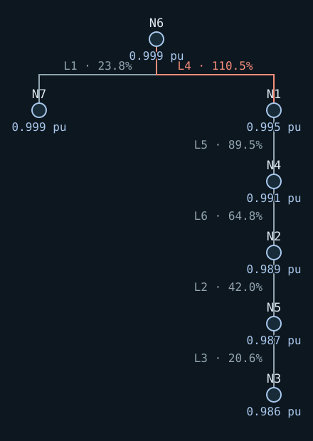
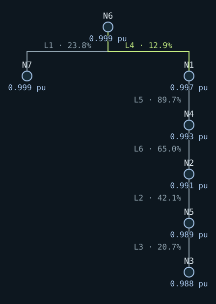

Какую задачу мы выбрали
Для первого эксперимента мы выбрали два связанных решения: подтвердить, что исправная сеть не требует изменений, или найти перегруженную линию и подобрать кабель. В обоих случаях модель должна сама вызвать расчёт и завершить задачу. После замены сеть нужно рассчитать заново.
- Рассчитать сетьПосмотреть напряжения и загрузку линий.
- Проверить вариантыРассчитать, что изменится при выборе другого кабеля.
- Внести заменуПрименить выбранные параметры к нужной линии.
- Пересчитать сетьУбедиться, что напряжения и загрузка укладываются в ограничения.
Разрешено не больше одной замены. Нагрузки и маршруты линий должны сохраниться. Задача считается решённой, когда свежий расчёт итоговой сети подтверждает все требования. Если исходная сеть исправна, менять оборудование не нужно.
Что видит агент и что он может делать
Мы использовали синтетические симметричные сети 400 В: от 4 до 7 узлов, радиальная схема и нагрузки постоянного импеданса. На таком наборе удобно проверять последовательность действий агента.
Кабель с наибольшим допустимым током не обязательно подходит для этой сети. Один вариант выдерживает ток, но даёт слишком большое падение напряжения; у другого малое сопротивление, но недостаточный допустимый ток. Поэтому выбрать замену только по одному параметру не получится.
Агент видит параметры сети, каталог кабелей и результаты своих расчётов. Ему доступны пять инструментов: simulate, validate, preview_line_catalog, set_line_catalog и submit. На задачу отводится не больше 10 действий, включая до 4 предварительных расчётов вариантов. Идентификаторы линии и кабеля модель выбирает сама.
Какие примеры вошли в обучение
В первый набор вошли 64 примера действий из 16 успешных решений. Для них использовали 8 учебных сетей из 4 семейств топологий. Последовательности составлял программный контроллер, работавший через те же инструменты, что и модель. Каждое решение проверяли расчётом.
Такие примеры показывали правильный путь, но слабо покрывали ситуации, когда несколько проверенных вариантов подряд не подходят. Для каждого задания мы рассмотрели 16 сочетаний: какие из четырёх вариантов кабеля агент уже проверил и что узнал о них. В данных появились случаи, где нужно продолжить поиск, выбрать уже найденный подходящий кабель или пересчитать сеть после его установки.
В итоге получили 240 уникальных примеров из 160 последовательностей, которые удалось довести до успешного завершения. Сети остались прежними: мы расширили набор ситуаций, а не разнообразие топологий. Проверочные и тестовые ответы в обучение не добавляли.
Перед обучением проверили токенизацию каждого примера: запрос не должен участвовать в расчёте ошибки, а весь ответ, включая вложенные аргументы инструмента, должен попадать в разметку.
Как проходило обучение
Сравнили Qwen3.5-0.8B и Qwen3.5-4B. Обе модели обучали локально на видеокартах с 24 ГБ памяти. В первой фазе выполнили 96 обновлений весов, во второй — 240. Каждый раз начинали с исходной модели, без адаптера от предыдущего прогона.
Обучали только LoRA-адаптеры в последних 8 языковых блоках: rank 16, alpha 32. Основные веса, визуальная часть и выходной слой оставались замороженными. Расчёты выполнялись в BF16, параметры адаптеров хранились в FP32.
Ошибка считалась только по ответу ассистента. На каждое обновление накапливали градиенты по четырём примерам: расчёт, проверка варианта, замена и завершение задачи. Так частый вызов расчёта не получал больший вес только из-за своего количества в данных. Использовали AdamW с шагом обучения 1e-4.
Что получилось у двух моделей
| Модель | Базовая | SFT · 96 шагов | SFT · 240 шагов |
|---|---|---|---|
| Qwen3.5-0.8B | 0 / 30 | 18 / 30 | 23 / 30 |
| Qwen3.5-4B | 0 / 30 | 21 / 30 | 28 / 30 |
До обучения 0.8B зацикливалась на повторных расчётах, а 4B нарушала формат вызовов инструментов и придумывала идентификаторы. После SFT ошибки формата исчезли. При этом модели всё ещё ошибались в выборе следующего действия.
В первом тесте на ранее не использованных семействах сетей 4B решила 5 из 6 задач, а 0.8B — 3 из 6. Исходные модели не решили ни одной. Выборка небольшая: три сети из двух семейств. Проверочную часть DEV уже использовали при разработке интерфейса, поэтому её нельзя считать независимой финальной оценкой.
| Модель | Учебные (TRAIN) | Проверочные (DEV) | Прежний TEST |
|---|---|---|---|
| Qwen3.5-0.8B | 15 / 16 | 5 / 8 | 3 / 6 |
| Qwen3.5-4B | 15 / 16 | 7 / 8 | 6 / 6 |
После расширенного обучения 4B решила 28 из 30 задач: все 15 случаев исправной сети и 13 из 15 задач на замену кабеля. При этом модель не потеряла ни одного из прежних успешных решений и справилась ещё с 7 задачами. В двух случаях модель зациклилась на повторении действий.
У 0.8B результат на учебных задачах вырос до 15 из 16, но на других сетях улучшения не произошло. При этом одно ранее правильное учебное решение потеряно. Это важное различие: модель лучше освоила знакомые ситуации, но пока не стала лучше переносить навык на новые сети.
Какие решения научилась принимать модель
В этом эксперименте было два типа задач: проверить исправную сеть и исправить сеть выбором кабеля из каталога. Разные длины линий и число узлов не превращают замену кабеля в новую инженерную задачу.
Исходная 4B: 0/15. После SFT 240: 15/15.
Исходная 4B: 0/15. После SFT 240: 13/15.
Это разбиение прежней регрессионной выборки из 30 случаев, не новый тест. Ниже — по одному выбранному TRAIN-примеру каждого типа. Все действия воспроизведены из сохранённых ответов модели, без подстановки сценарного контроллера.
Базовая модель ошибалась в формате вызовов и не выполнила расчёт. Показатели исходной сети получены первым расчётом обученной модели, до изменений. Размещение узлов условное; напряжения и загрузка проверены повторным расчётом.
Проверка без правок · Подбор кабеля · Сравнение вариантов
Проверить исправную сеть и оставить её без изменений
7 узлов · 400 В · TRAIN · Qwen3.5-4B
Сеть уже удовлетворяет ограничениям. Нужно подтвердить это расчётом и завершить задачу, сохранив оборудование и нагрузки.
До обучения
Задача не решена

- Минимальное U
- 0.988 pu
- Максимальная загрузка
- 89.7%
Исходная сеть; базовая модель не смогла вызвать решатель.
Действия модели: 3
{"tool":"preview_line_catalog","equipment_id":"L5","catalog_id":"copper-1"}Вызов отклонён: неверный формат.{"tool":"set_line_catalog","equipment_id":"L5","catalog_id":"copper-1"}Вызов отклонён: неверный формат.{"tool":"set_line_catalog","equipment_id":"L5","catalog_id":"copper-1"}Вызов отклонён: неверный формат.
После SFT · 240 шагов
Задача решена

- Минимальное U
- 0.988 pu
- Максимальная загрузка
- 89.7%
Расчёт выполнен, изменения не понадобились. Агент завершил задачу за два вызова.
Действия модели: 2
{"name":"simulate","arguments":{}}{"name":"submit","arguments":{}}
Схема после проверки выглядит так же — это правильный результат для исправной сети. Успех здесь означает выполнение расчёта и завершение задачи, а не обязательную правку.
Сравнить кабели расчётом и отклонить неподходящий
7 узлов · 400 В · TRAIN · Qwen3.5-4B
Линия L4 перегружена. Разрешена одна замена кабеля; нагрузки и маршруты должны сохраниться, напряжение — остаться не ниже 0,95 pu, загрузка — не выше 100%.
До обучения
Задача не решена

- Минимальное U
- 0.986 pu
- Максимальная загрузка
- 110.5%
Исходная сеть; базовая модель не смогла вызвать решатель.
Действия модели: 3
{"tool":"preview_line_catalog","equipment_id":"L1","catalog_id":"part-5140b18f82"}Вызов отклонён: неверный формат.{"tool":"set_line_catalog","equipment_id":"L1","catalog_id":"part-5140b18f82"}Вызов отклонён: неверный формат.{"tool":"set_line_catalog","equipment_id":"L1","catalog_id":"part-5140b18f82"}Вызов отклонён: неверный формат.
После SFT · 240 шагов
Задача решена

- Минимальное U
- 0.988 pu
- Максимальная загрузка
- 89.7%
Кабель заменён после двух проверок вариантов. Итог подтверждён расчётом реальной сети.
Действия модели: 6
{"name":"simulate","arguments":{}}{"name":"preview_line_catalog","arguments":{"equipment_id":"L4","catalog_id":"part-0344c17b1f"}}{"name":"preview_line_catalog","arguments":{"equipment_id":"L4","catalog_id":"part-5140b18f82"}}{"name":"set_line_catalog","arguments":{"equipment_id":"L4","catalog_id":"part-5140b18f82"}}{"name":"simulate","arguments":{}}{"name":"submit","arguments":{}}
Как агент выбирал вариант
Оба расчёта ниже — проверки гипотез. Они не меняли сеть. Агент применил второй вариант, пересчитал реальную сеть и только затем завершил задачу.
Не проходит по загрузке
part-0344c17b1f- Минимальное U
- 0.990 pu
- Максимальная загрузка
- 401.4%
R = 0.0371 Ом/км · допустимый ток 9.1 А
Подходит по результату расчёта
part-5140b18f82- Минимальное U
- 0.988 pu
- Максимальная загрузка
- 89.7%
R = 0.1484 Ом/км · допустимый ток 283.3 А
У первого кабеля меньше сопротивление, но слишком низкий допустимый ток: загрузка достигает 401,4%. Одного улучшения напряжения для выбора недостаточно.
Каких задач в этом эксперименте не было
Сборка сети по ТЗ и диагностика внесённых проблем есть в отдельных ограниченных эпизодах Agent Lab, но их не проверяли этим SFT-прогоном. Переключения, координация защит, пуск двигателей и чтение схем по изображению также не входят в приведённые результаты. Для каждого направления нужны свои данные и отдельная оценка агента.
Как мы перепроверили результаты
Мы повторно запустили все 180 эпизодов двух моделей и трёх фаз, подставляя сохранённые ответы в исходную среду. Проверили, что агент видит те же данные, вызывает те же инструменты и приходит к тому же результату. Для каждого выполненного расчёта также проверили наличие независимой численной сверки.
В этом профиле результаты моделера сравниваются с независимым решением линейных узловых уравнений для нагрузок постоянного импеданса. Отдельно проверили, что замороженные веса не изменились, а сохранённые адаптеры можно загрузить обратно.
Проверки кода тоже прошли: 86 целевых Python-тестов в каждом из двух окружений и 60 веб-проверок. Эти числа описывают проверку реализации; результаты агента приведены отдельно в таблицах выше.
Что будем проверять дальше
Следующий шаг — добавить другие учебные сети и заранее отложить новые семейства для тестирования. Нужно проверить, сохранится ли результат при смене идентификаторов, порядка кабелей в каталоге и единиц измерения.
Визуальную часть Qwen пока не использовали. Для неё нужны задания, в которых без схемы или графика действительно не обойтись. Такие задачи будем сравнивать с текстовой версией и с подменёнными изображениями, чтобы понять, помогает ли модели сама картинка.
Отдельное направление — GRPO с оценкой действий по результатам решателя и учётом бюджета расчётов. В описанном эксперименте использовалось только SFT — обучение на примерах правильных действий.
Выводы этой статьи относятся к выбору кабеля в небольших синтетических сетях. Пуски двигателей, динамика, EMT и работа по натурным данным потребуют своих учебных задач и проверок. Обученные адаптеры пока остаются исследовательскими.
Где посмотреть данные
Сводные результаты можно скачать в JSON. В файле есть показатели, описание выборки и хэши проверочных артефактов. Скрытые задания и ответы в него не включены.
- Скачать результаты эксперимента
- Посмотреть статус проекта и пути к локальным данным
benchmarks/engineering_workflow_campaign_audit.pybenchmarks/engineering_branch_sft.py
Полные журналы и адаптеры сохраняются в каталоге reports/ локальной копии проекта. Для повторения обучения нужны зафиксированные версии моделей и исходных наборов данных, перечисленные в плане. SHA-256 помогает проверить целостность файлов, но не является внешней подписью.